背景与关卡动效：真实时序及落点
以下是实际 Edge 页面和目标内部原始PNG，不是完整生成图片或器件区代证。点击展开可查看实际页面；局部图按页面显示尺寸采集，文件未后期缩放。反证与未验项见README.md和results.json。正式教材未提供，截图使用独立合成课程与账号
login-1440x900
目标原始截图 80×54 / 80×54；帧 ['4', '5']。页面原始截图 1440×900，页面图为另一拍摄时刻
AB
查看真实页面及落点
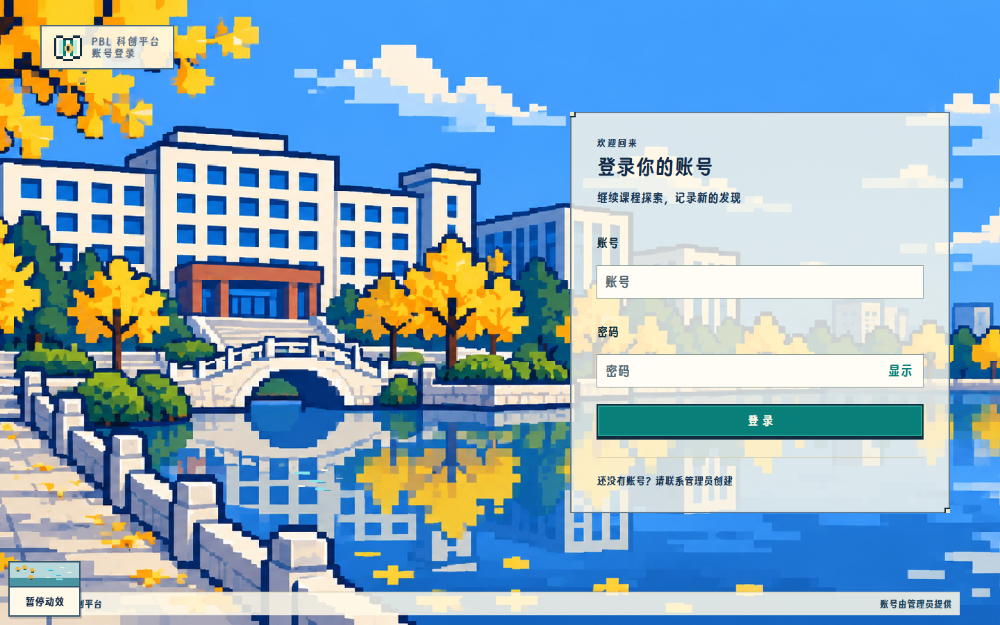
SHA A 63b2390d2ce26ecd1fd7d119095ccabd7741a157bf8dfd60483a28b71c0d669c
B 04986b580f1a5637c7694d536163c2824567a55e728ac517bff11487ac3b3a6e
login-768x1024
目标原始截图 92×61 / 92×61；帧 ['3', '4']。页面原始截图 768×1024，页面图为另一拍摄时刻
AB
查看真实页面及落点
SHA A 8bcf0b6067ea64b1a4243d9c957ace11988aeab757cee628498f7996cdfb5cf3
B 6f2ffaacb8485794606d42c1a3c697ccfe09bc71ed23dc5cdbf76c6130461b82
login-390x844
目标原始截图 24×17 / 24×17；帧 ['3', '3', '5']。页面原始截图 390×844，页面图为另一拍摄时刻
AB
查看真实页面及落点
SHA A 0db51176cca797cb96fec244f3d9629406997e93a7902983e4e608bb4f2e016f
B dbfbe5a474de2d63986a5fe47cedaecec36453797ced491b4d598be4f9752b2e
login-360x640
目标原始截图 19×13 / 19×13；帧 ['4', '5', '6']。页面原始截图 360×640，页面图为另一拍摄时刻
AB
查看真实页面及落点
SHA A aa569deddfbdc544f05fbbedc28aba7f0581e672bf4c6c7995e5f79f0ca1da2f
B 2f8320ab216b818b569a34641ab6007258964ca4d6c65d7f9205443cfee1eb5b
login-844x390
目标原始截图 44×29 / 44×29；帧 ['4', '5']。页面原始截图 844×390，页面图为另一拍摄时刻
AB
查看真实页面及落点
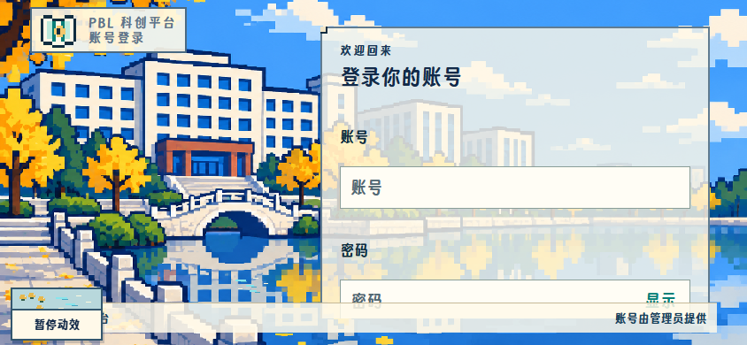
SHA A f8429a5e1b24875cb23cd99b8b6cb3d6c4f31e5f6b8d3ff25c86e4c8d2c6a0f4
B 81fda806c5b6727c5217c1d08de915b4c8a8248839897bc2deac6522352f08d4
campus-background-0
目标原始截图 59×39 / 59×39；帧 ['5', '6']。页面原始截图 1440×900，页面图为另一拍摄时刻
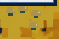
A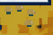
B查看真实页面及落点
SHA A 0c22abdce7971eca911f8b342b5d4358beee3c436309d90fd2c022ed6f99cf49
B b76f372d47eebf9db7b25f99f01079a5376292763554fff9c05c97be20e0e039
campus-node-1
目标原始截图 56×38 / 56×38；帧 ['5', '6']。页面原始截图 1440×900，页面图为另一拍摄时刻
AB
查看真实页面及落点
SHA A 88a8b8ead7b07f291daea90dd08f2f1f60e07bc0c7c366ab7e5b1bcb9d2b7d08
B fc03a0952f04ef0b5d288463b93beeb1c50ef2e925f9a9caa6cc18d6b2c9cb3d
campus-node-2
目标原始截图 56×37 / 56×37；帧 ['3', '5']。页面原始截图 1440×900，页面图为另一拍摄时刻
AB
查看真实页面及落点
SHA A 7424b72c3127032fabc04154e0f23dee996845dd79db2541e19e62ef7eed1d82
B 623e479422596c6bcfff445422a88d7e031cec7077dbb8340c6012f7806114ce
campus-node-3
目标原始截图 56×37 / 56×37；帧 ['2', '3']。页面原始截图 1440×900，页面图为另一拍摄时刻
AB
查看真实页面及落点
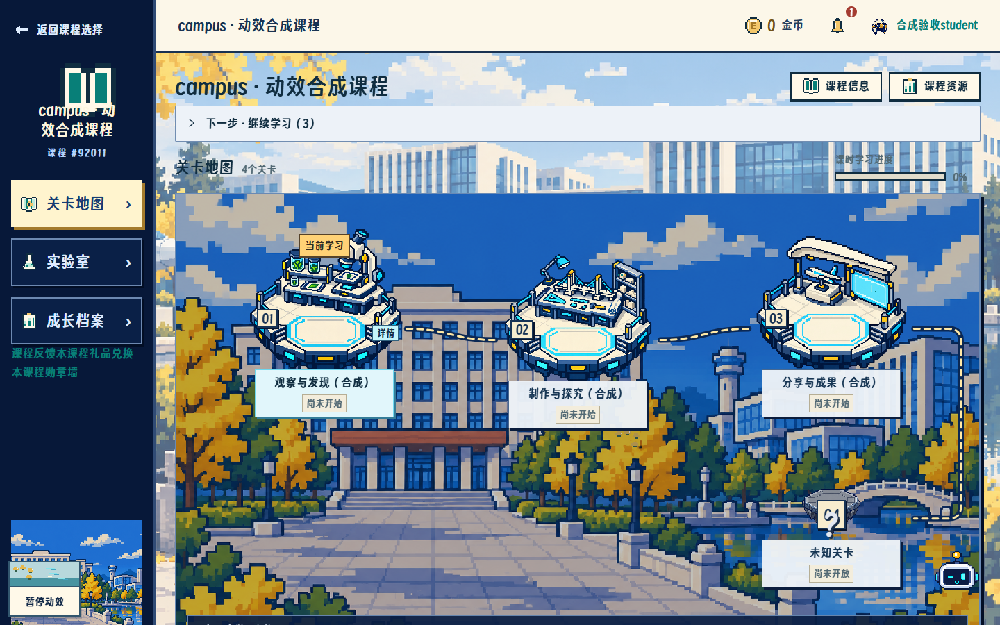
SHA A 5bdad32e51bdb477c06be0990f751137ece6169c84768bc7ec98a4cd4b3d9475
B 5237d63225681cf3b274055873d4059bd1264cbd5c94bb3ed2bb5f9279f5f3f3
sky-background-0
目标原始截图 59×40 / 59×40；帧 ['6', '7']。页面原始截图 1440×900，页面图为另一拍摄时刻
AB
查看真实页面及落点
SHA A d8441553d0b08ede395aef4343d59a20661875ab2de511a6497ef6b83a272596
B bfdaae9726135ff058c194f8833d4cb7e7a30a693be5e67020e57b872ba3a430
sky-node-1
目标原始截图 56×37 / 56×37；帧 ['6', '7']。页面原始截图 1440×900，页面图为另一拍摄时刻
AB
查看真实页面及落点
SHA A a1a8d1386ab0373019d07ba512e5ad96741b2060111fb08bf1785f590690e1b4
B 7584464e2f7af39fd317f36f7efc3d027479aac45dbf6c6d75ce69c9e6609524
sky-node-2
目标原始截图 56×37 / 56×37；帧 ['5', '6']。页面原始截图 1440×900，页面图为另一拍摄时刻
AB
查看真实页面及落点
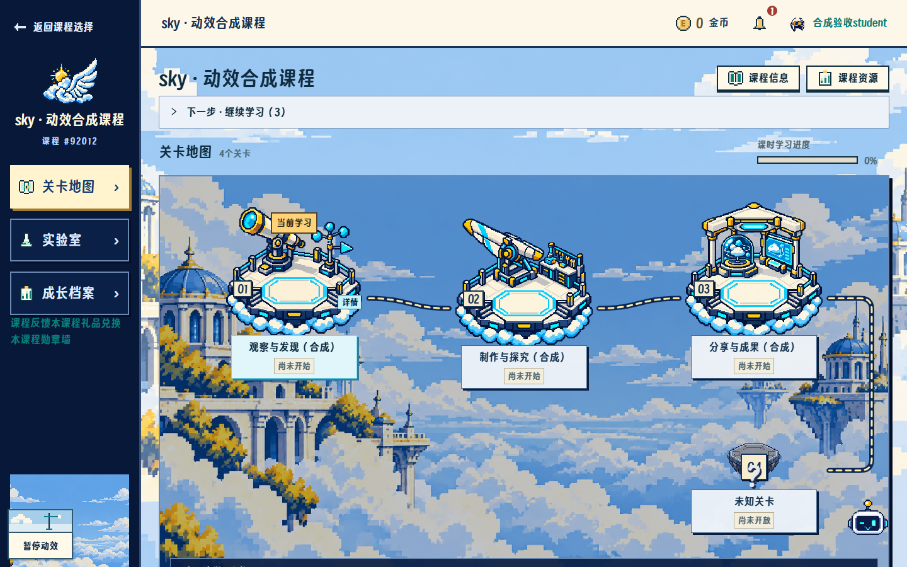
SHA A 626b68ead173358360178c9655002645cfbd26251ea144ee391e8c0d4574f6ac
B d696c8c56ce64d8616b0a9f4b53b16140df5779c9b813eb2b861a7291df81557
sky-node-3
目标原始截图 56×38 / 56×38；帧 ['4', '6']。页面原始截图 1440×900，页面图为另一拍摄时刻
AB
查看真实页面及落点
SHA A fe6dfa9e14633b1f18174cf8b0b9ee769f5aff7b21fd584dfae8f200871329c7
B 5e293b7e154c60d2c33c0a4233440c51fad45b0e926f8945902fe323c1c25610
forest-background-0
目标原始截图 60×40 / 60×40；帧 ['5', '6']。页面原始截图 1440×900，页面图为另一拍摄时刻
AB
查看真实页面及落点
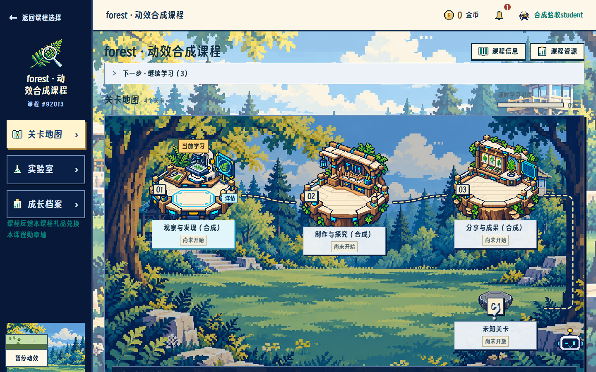
SHA A 9ad1fbadc3c0bf29a32a422896e011a1457caa2e3c85e5e13019c45e2b449243
B 609ce99c3413ecdcf792970b4cecdd4ef5a612574a20da54f4ae1e937e27bc9d
forest-node-1
目标原始截图 56×38 / 56×38；帧 ['5', '7']。页面原始截图 1440×900，页面图为另一拍摄时刻
AB
查看真实页面及落点
SHA A 8fc85518752feea0423d75aee6eea89e2b2f84febd1b171f5409eaba3cee4387
B c8c0084defaf7861eb5a86caf6dedad92283ec5b046a9c51ab29dbf46fd7c807
forest-node-2
目标原始截图 56×37 / 56×37；帧 ['4', '5']。页面原始截图 1440×900，页面图为另一拍摄时刻
AB
查看真实页面及落点
SHA A 332be5c49f5588d5e77f3ba7ac11d33d01e0b91f26cae010f1f02fbddbb58591
B c8b655cdb786f6f44c5791e4d882bf985fc8dea72fb871ef244e9b62b4c12442
forest-node-3
目标原始截图 56×37 / 56×37；帧 ['2', '4']。页面原始截图 1440×900，页面图为另一拍摄时刻
AB
查看真实页面及落点
SHA A 0269fb91793e3848e2631ff56e11fd842b4423be269b7a8eb830f4009054debc
B 59d21c87e3c73ba07306328be37cd2351ccdfb988091fcc702a5e863c46b4fe5
beach-background-0
目标原始截图 59×40 / 59×40；帧 ['4', '5']。页面原始截图 1440×900，页面图为另一拍摄时刻
AB
查看真实页面及落点
SHA A 6de800029ef62eeb0e26eca147e42b530abd1a4d29e5138c1570d766f10975d7
B 5bf8caeac1292653bbdd1d8bc3c7557f745cf0cf3adf619fe906fd6c1a09af4c
beach-node-1
目标原始截图 56×38 / 56×38；帧 ['3', '4']。页面原始截图 1440×900，页面图为另一拍摄时刻
AB
查看真实页面及落点
SHA A 4ecf85308d29bbaa58fdb675b4eb1b1bc034e8e3fa803da80a87f0e131fb21d7
B d8efc81fe1759f2e95a863936f456bddc3cd761c6b7a41ca0297de5e25954f3c
beach-node-2
目标原始截图 56×38 / 56×38；帧 ['2', '3']。页面原始截图 1440×900，页面图为另一拍摄时刻
AB
查看真实页面及落点
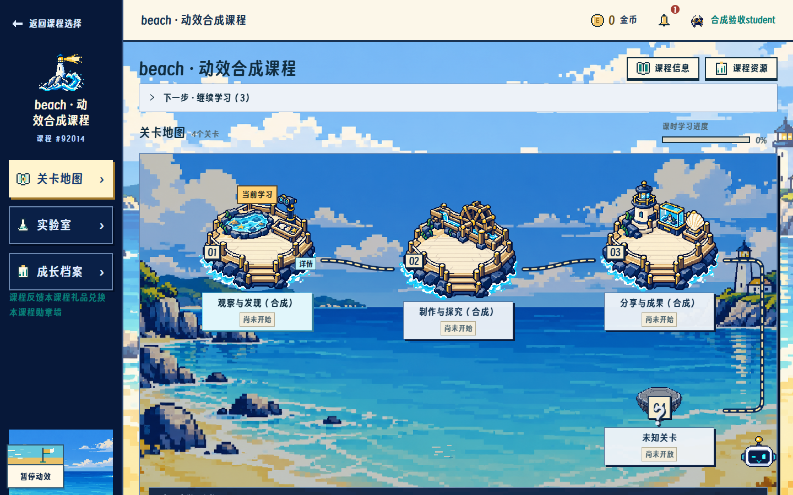
SHA A 71a18a42974d31f65c9902a91690c456fca5dc4cd2d8fc614c4e80edf1ebbb91
B 25d225f4bbf3578f063a3c5acbb6dfb0fcc92237294acdda8f8f947882afd191
beach-node-3
目标原始截图 56×38 / 56×38；帧 ['1', '2']。页面原始截图 1440×900，页面图为另一拍摄时刻
AB
查看真实页面及落点
SHA A 8034643afd28e18179b2a7d0c4a34d5f6d798cea33cd57dc0d92b33de36dec29
B 46c5ce64dc02613415e19138d872f647a812dc9d37348eae70a68718c2b3d662
voyage-background-0
目标原始截图 67×45 / 67×45；帧 ['6', '7']。页面原始截图 1440×900，页面图为另一拍摄时刻
AB
查看真实页面及落点
SHA A 8ab567e686ce78832ed1b1ddc767f441290611ed1cceff47dca652839aaab329
B aa310ff9352b54597d2fa510877eadbaf39f597420721e5b0cf6a3bf4fb9ec30
voyage-node-1
目标原始截图 56×38 / 56×38；帧 ['5', '6']。页面原始截图 1440×900，页面图为另一拍摄时刻
AB
查看真实页面及落点
SHA A 5f2c668327047b2e27eecf204a324d900876008742dd2e1c6585ed13ad447c1d
B abb7ab3925d2d639194e4382027e5980e7d4123218c8cec117cdefbffd1e037b
voyage-node-2
目标原始截图 56×38 / 56×38；帧 ['3', '4']。页面原始截图 1440×900，页面图为另一拍摄时刻
AB
查看真实页面及落点
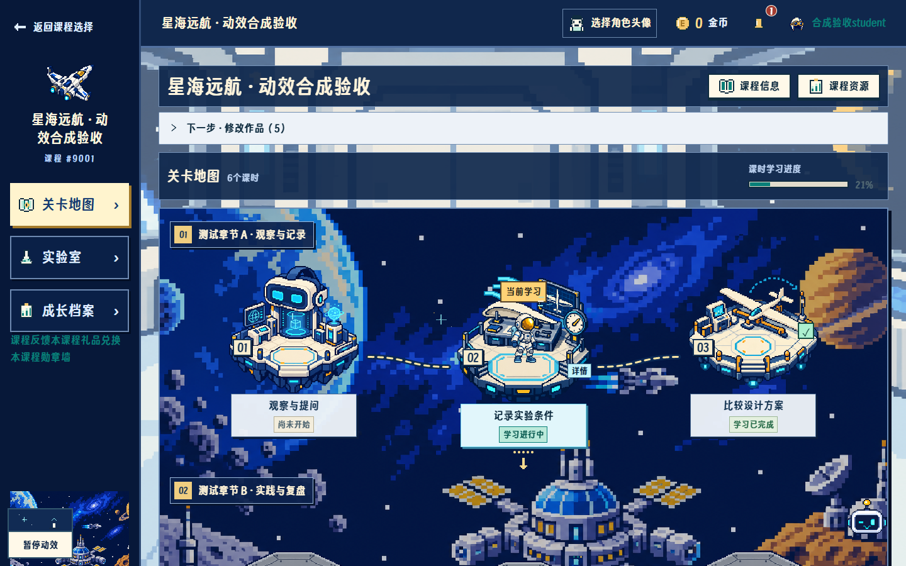
SHA A 5b6318a95c83fc84d60ac4da3a23e01a21c6418c7fc715513a1096f566507c40
B 4132d7cb0cfa1e1339947a083181f38a36a8ed22ef61f5c4142f147f1a82b6dd
voyage-node-3
目标原始截图 56×37 / 56×37；帧 ['1', '2']。页面原始截图 1440×900，页面图为另一拍摄时刻
AB
查看真实页面及落点

SHA A a41bfe18ac73a6f1d3900b56129122e2c7558e3c3cf5a0138502707e61f6ef56
B c6b1deae42a81e1195cb8eb6c7133b2f9399f88f6422b8f9662b7b5907870d1b
explore-background
目标原始截图 80×54 / 80×54；帧 ['0', '2']。页面原始截图 1440×900，页面图为另一拍摄时刻
AB
查看真实页面及落点
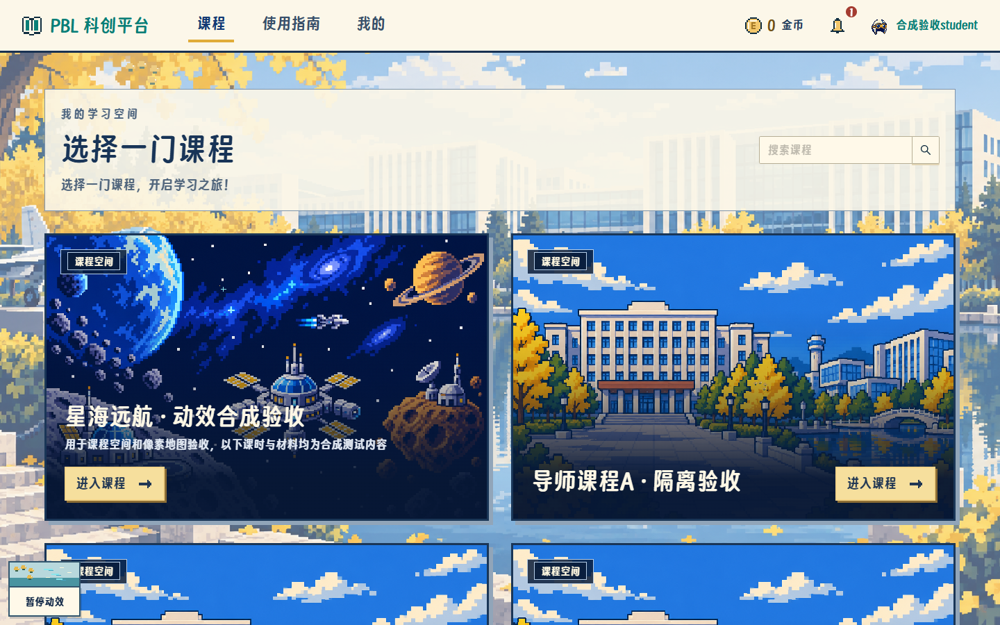
SHA A 80c5e1ff0ccc4566cdf893ed492b6a032ced8d4f718e4be762a1def91f06915a
B 87dcb9a234d4fe65175657978f5aa183b0eeecc5a2c68576a96f3a31748cb14d
me-background
目标原始截图 80×54 / 80×54；帧 ['2', '3']。页面原始截图 1440×900，页面图为另一拍摄时刻
AB
查看真实页面及落点
SHA A cae7bfe2ab00cbbd8f34fb8921f0f839ce5513f05758427a9b29c7a6598bb7ec
B 50a27d4f13ee51a2ea176cb8044d7d76b66d84c4b14cef131bf1ed60ff12ba9f
forest-node-mobile
目标原始截图 49×33 / 49×33；帧 ['5', '6']。页面原始截图 390×844，页面图为另一拍摄时刻
AB
查看真实页面及落点
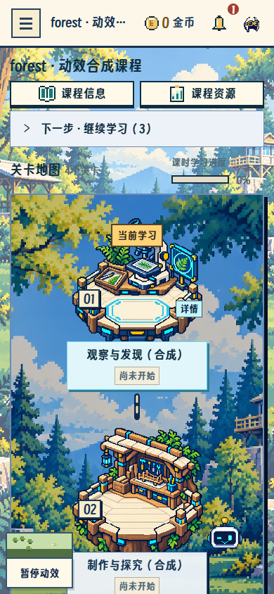
SHA A 369f2e462c9b0488db6cb72a15e5990e6f619e2e40fc424f1486dfe375310d80
B 9345c374eed7989b9b82a6901a6fbccdfeff406c32253bb6e2b71ae8dc99be17
admin-1440-background
目标原始截图 80×54 / 80×54；帧 ['5', '6']。页面原始截图 1440×900，页面图为另一拍摄时刻
AB
查看真实页面及落点
SHA A d6e9ee1d27940d35b3603974ff3532404c50451932d241f133097ee4908a279d
B 5f38534cdd9ea0e660d663ec5a2755d93b4c8554381dec48b95ee5d3bec1e9bb
admin-390-background
目标原始截图 24×17 / 24×17；帧 ['7', '0']。页面原始截图 390×844，页面图为另一拍摄时刻
AB
查看真实页面及落点
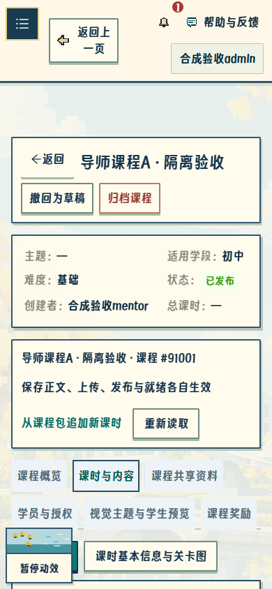
SHA A 1d3c048b004704df1b44b35392e23db129b0b18642aa9c5e8c2db0fad221fca9
B 200c2172b375421d9919f85fce04523e7bbe64488f1eeb3c04639b0e5a701f53
mentor-1440-background
目标原始截图 80×54 / 80×54；帧 ['5', '6']。页面原始截图 1440×900，页面图为另一拍摄时刻
AB
查看真实页面及落点
SHA A 7d913fc8935c5e6f36e8f4eaa3125b56a4e348cb491b8bc7d388dee9cd03b762
B 968450ffc90fcb9b63109474c21a376ba25d93a7bea2fb28d30c345a094d17c6
mentor-390-background
目标原始截图 24×17 / 24×17；帧 ['7', '0']。页面原始截图 390×844，页面图为另一拍摄时刻
AB
查看真实页面及落点
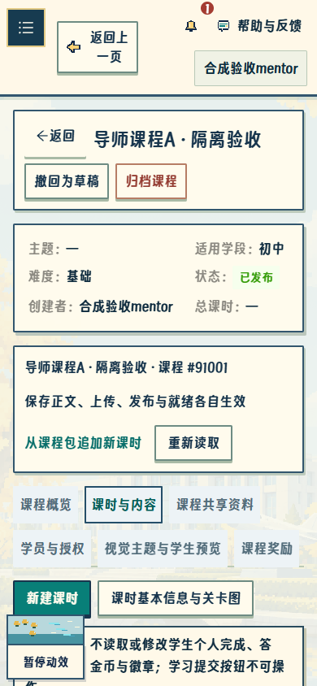
SHA A aaa95e9ee2f9fc083fcf5bbaef0bac7c47b2bf0260202e7c5e578f7c70b79372
B 19e6596eba87741d62c5e6cf362144a8b2a4937693e7254f9df56ed9ac6092d2
source-login-desktop
目标原始截图 65×43 / 65×43；帧 ['1', '2']。页面原始截图 1440×900，页面图为另一拍摄时刻
AB
查看真实页面及落点
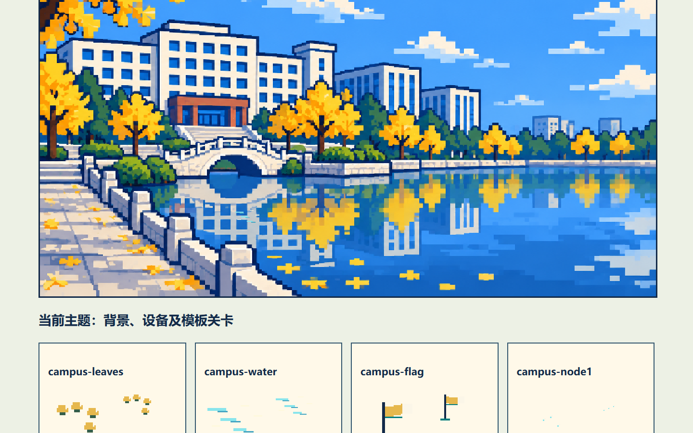
SHA A dc00eaf8657ae30dacefe7ed7b82e60214785cb015300b6bba3fc9874deb6acf
B ec124dd6d609253aca46db0e2ee4d36fd84a5e6d5b855ba7b4819e016efd0409
source-login-mobile
目标原始截图 65×43 / 65×43；帧 ['5', '7', '0']。页面原始截图 1440×900，页面图为另一拍摄时刻
AB
查看真实页面及落点
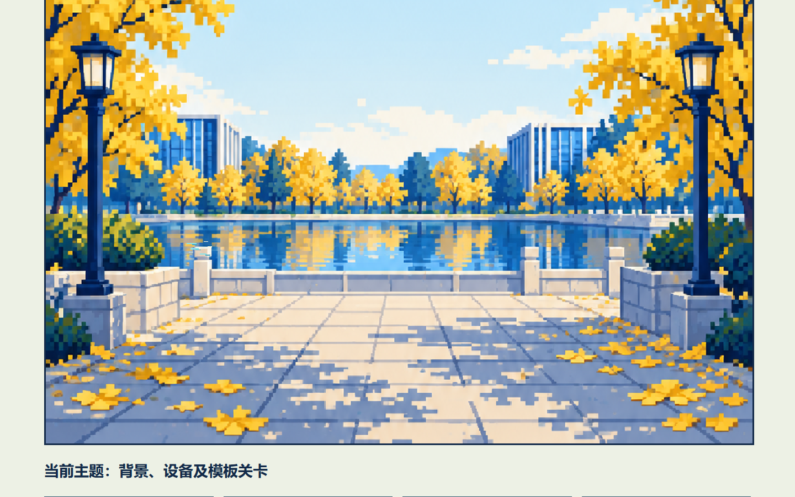
SHA A 710d43d725ed4caff0f67adc3d87704ff555fe76f78581099fdf6adfea489cda
B 9d914e542616259d55f637e66ce2a879fa9d06ef1c2d5fc6415a4a48890c8dd8
source-campus-select
目标原始截图 64×44 / 64×44；帧 ['4', '6']。页面原始截图 1440×900，页面图为另一拍摄时刻
AB
查看真实页面及落点
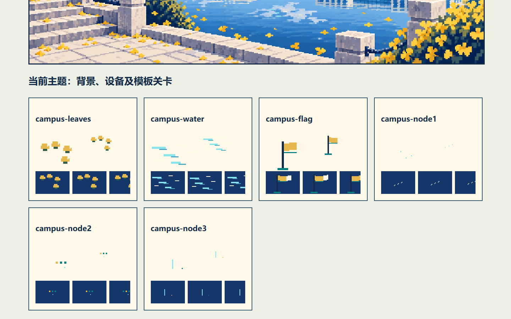
SHA A 832cd64e7dab6d09858abd87acaee8a9a4d4bec1dba4fef42710f91c8b473bdb
B 3ef5fa464bea769a9a67c577b77677d8ced701c9869d01cf780dffd014b78073
source-campus-personal
目标原始截图 64×44 / 64×44；帧 ['0', '1']。页面原始截图 1440×900，页面图为另一拍摄时刻
AB
查看真实页面及落点
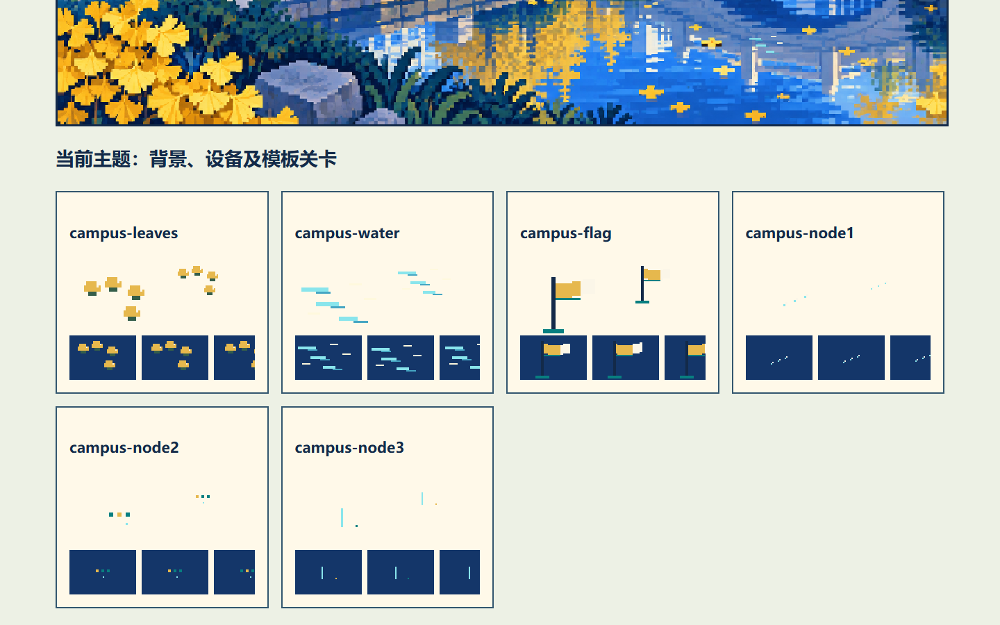
SHA A 4d63daea1373253493aabfb0c5efd3050b8bae422cdcd01f6a47c737fcab2f0c
B 5122c84d6ab48ee9acadcce2eb37b329afb3ca9d4676b803c94ef5602f43cb5f
source-campus
目标原始截图 65×43 / 65×43；帧 ['4', '5']。页面原始截图 1440×900，页面图为另一拍摄时刻
AB
查看真实页面及落点
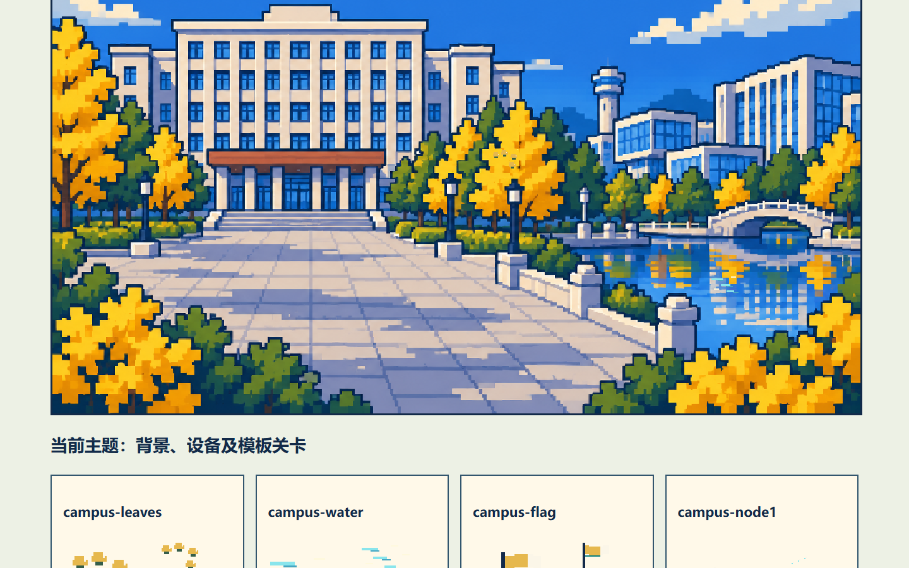
SHA A da780bd870fc48a42b7ef83f0118f65bfe7512b1b38b6d83460660cf73f1e146
B facce11d81a45cb0d7bfb8d2a7f61e56c16bfded773d390bdeadf17623e19d7d
source-campus-workspace
目标原始截图 65×44 / 65×44；帧 ['1', '2']。页面原始截图 1440×900，页面图为另一拍摄时刻
AB
查看真实页面及落点
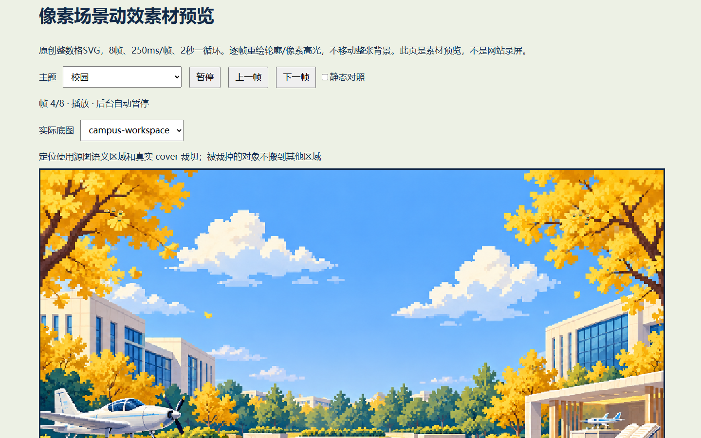
SHA A 06df56b2932f0446ea334cf3b7703006e029b562bd4c5738bd818a689332642f
B 829d5e1a91d06eaf65f2fcd5577e69d0c9d7e9a3f78649536a2c054c2e6d6da1
source-campus-mobile
目标原始截图 64×44 / 64×44；帧 ['5', '7', '0']。页面原始截图 1440×900，页面图为另一拍摄时刻
AB
查看真实页面及落点
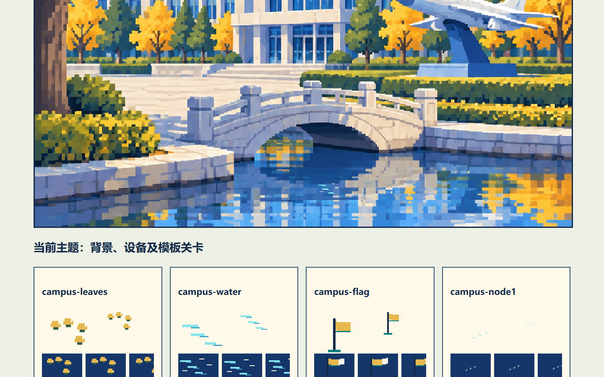
SHA A 5cd070435a7d3eaa512c37d128100753f7b5ca0081305f53d06b89b85c1939b7
B 2c87cca1822dfd40043aa82a3bb3a7723c6827f9dc418f4446477cb861f209c2
source-sky-desktop
目标原始截图 64×44 / 64×44；帧 ['3', '5']。页面原始截图 1440×900，页面图为另一拍摄时刻
AB
查看真实页面及落点
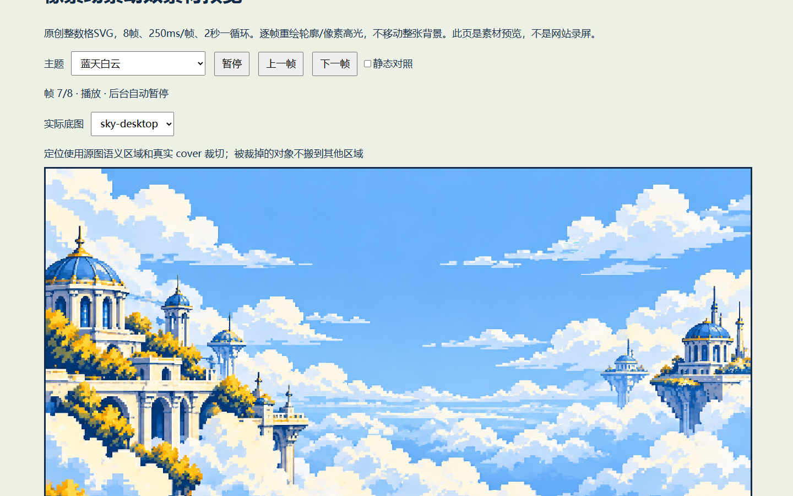
SHA A c61e3fb042bfbfb47cc5cfaecac11f17c6cab4d72697702c7a3326f62306468a
B 1cdc90e015b9df852ff6ddb331585d34979e8c41de6a4d622115bd78de5ddd95
source-sky-mobile
目标原始截图 65×43 / 65×43；帧 ['0', '2']。页面原始截图 1440×900，页面图为另一拍摄时刻
AB
查看真实页面及落点
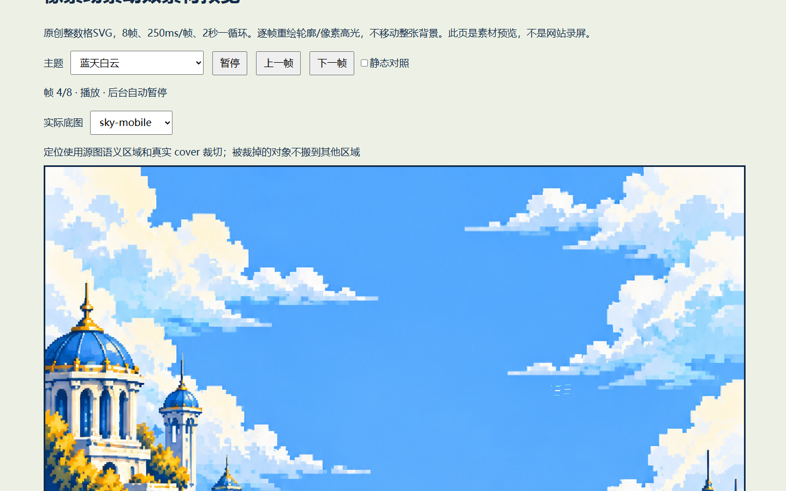
SHA A 294bc8039c9d7fd31a60cb50f05957455f8bf516d5cd50dc136d85266b5bbe01
B b4bc2a6ce8837b6278346afc1204c47f854cc6484348d2270aa166d99513e826
source-sky-cover
目标原始截图 65×43 / 65×43；帧 ['5', '6']。页面原始截图 1440×900，页面图为另一拍摄时刻
AB
查看真实页面及落点
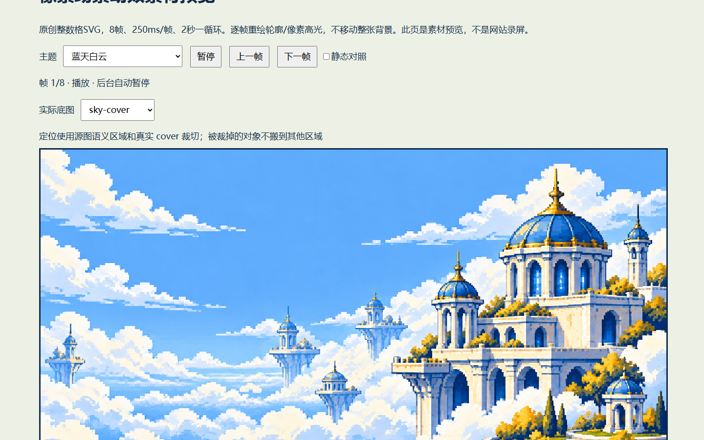
SHA A 70839fc875b94333db8bc20ed6c70d511e2bd023fd76097bb3e784723295c85c
B 9493340dea47fdc0b5e1b4a198294579ae55c47b5f05298e661166e0e61d77a9
source-forest-desktop
目标原始截图 65×43 / 65×43；帧 ['2', '3']。页面原始截图 1440×900，页面图为另一拍摄时刻
AB
查看真实页面及落点
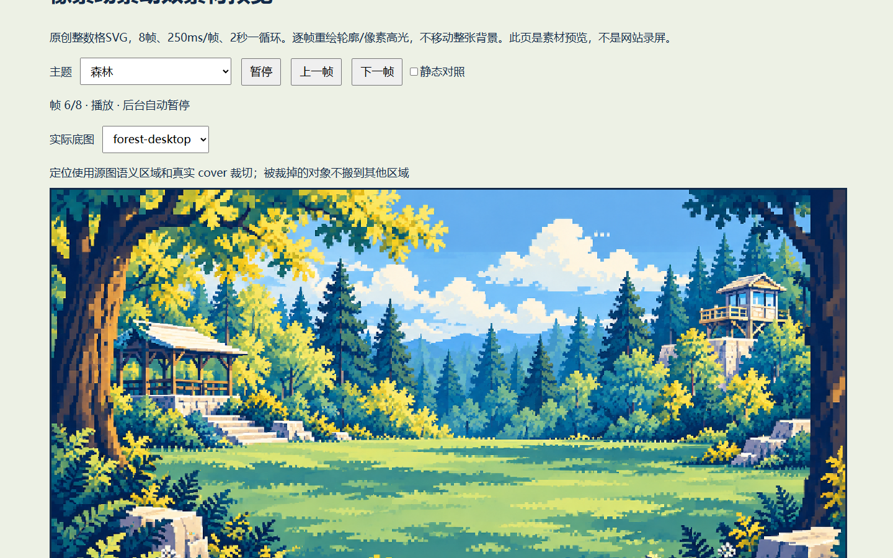
SHA A 162fde7428dd82bd1e84fa5edafba316f4ed26e0af5b483d31fa6a15a98980c1
B bcf34241c22e326d83c00c264cd83f66ed96a5418302a86d4855b8109c7c5b03
source-forest-mobile
目标原始截图 65×44 / 65×44；帧 ['7', '0']。页面原始截图 1440×900，页面图为另一拍摄时刻
AB
查看真实页面及落点
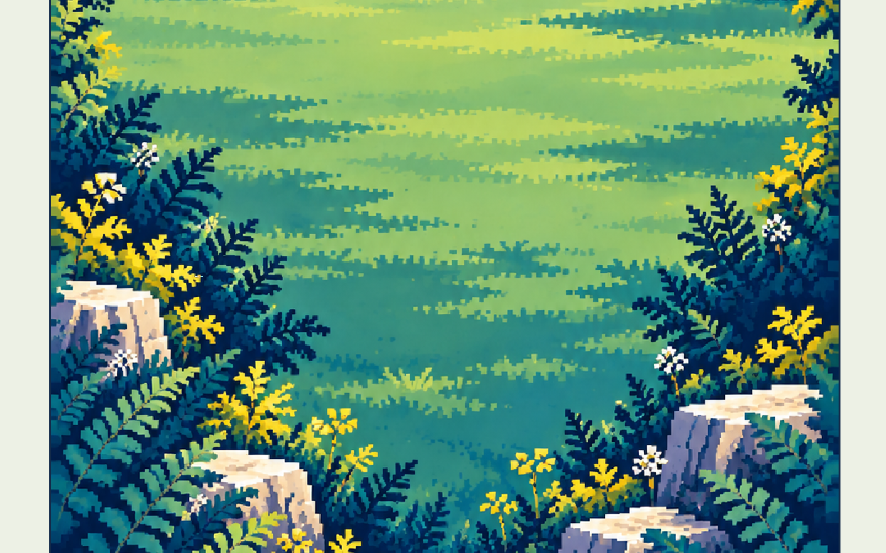
SHA A a27ac4e828bcf6ef42ef270b8a76b9b21f8af50645e4e6ebafb4c4596d0d1a27
B 30476fad31ae44109df21290470126dec69ae6e86ae791ebd15ded422cb21e39
source-forest-cover
目标原始截图 64×44 / 64×44；帧 ['4', '5']。页面原始截图 1440×900，页面图为另一拍摄时刻
AB
查看真实页面及落点
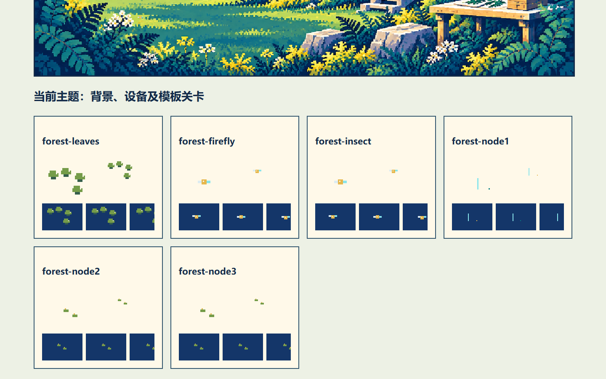
SHA A 3293dddb5b04c8f05da647706f24d669fb40b7578d9c26b4fcef21e0de2c3ad0
B 0ae076caa63bea78fbd9fef24da0fd4f5e3d670fc8bae97cb457a8252239a581
source-beach-desktop
目标原始截图 65×44 / 65×44；帧 ['0', '1']。页面原始截图 1440×900，页面图为另一拍摄时刻
AB
查看真实页面及落点
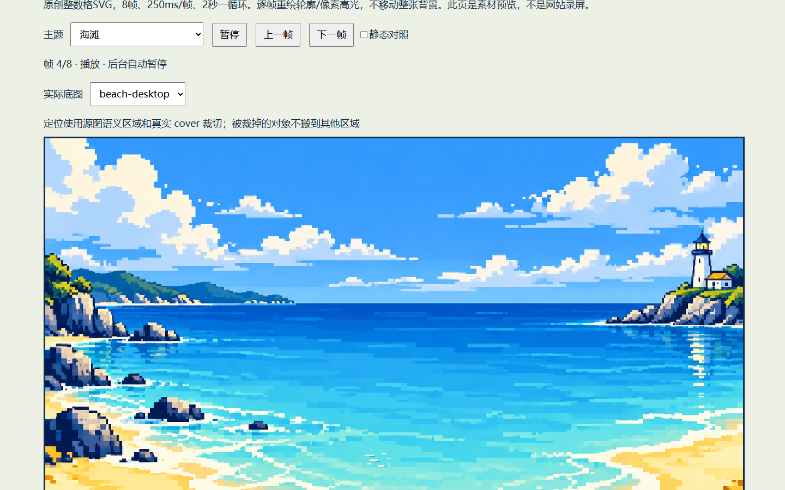
SHA A a80b92990928e1f4924892aace6ed98212852aace9f5258e6ae65605297dc62c
B 736130a29d4e16398693eeabc6ecf5963b318a16c053d24664cee73ae383c9cd
source-beach-mobile
目标原始截图 65×44 / 65×44；帧 ['5', '6']。页面原始截图 1440×900，页面图为另一拍摄时刻
AB
查看真实页面及落点
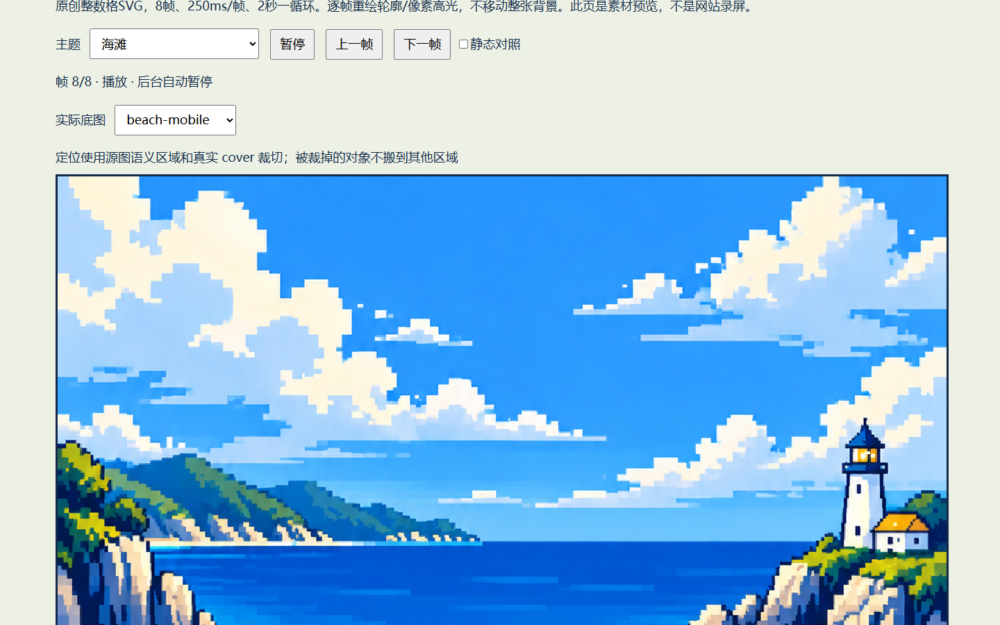
SHA A 8049fa6514c038d38c20190e51c73b5e00821f6137a5990dc2c7c1273f535876
B 2d3b5b0d9578ed41a3c2f9fa5df7949b3da5b7bf4c5aa4247c3cef0dd10b21d4
source-beach-cover
目标原始截图 65×44 / 65×44；帧 ['1', '3']。页面原始截图 1440×900，页面图为另一拍摄时刻
AB
查看真实页面及落点
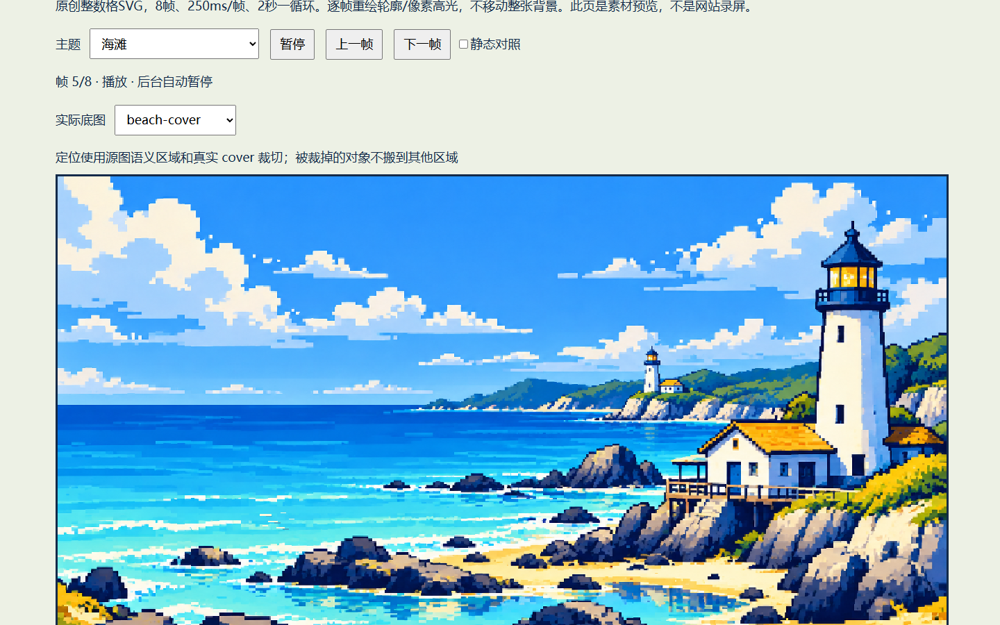
SHA A 6792dfdd01533be94035546909a56b83dbf1a6508e331e38e6206559040c76e0
B 40a5727d6b50fa1985d2b158ce5b982e4879713bfea97cfb3a2a8134bab21bcc
source-cosmos
目标原始截图 65×43 / 65×43；帧 ['6', '0']。页面原始截图 1440×900，页面图为另一拍摄时刻
AB
查看真实页面及落点
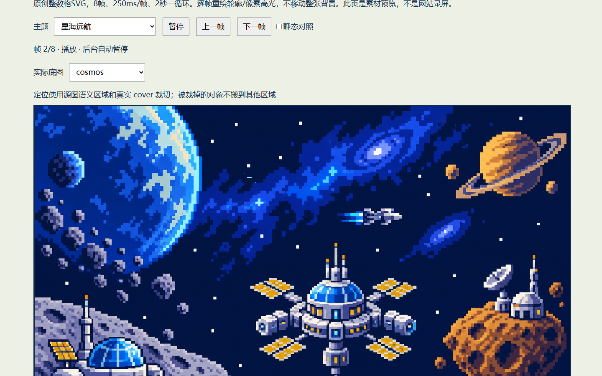
SHA A 5b2b8d86d3e367a163f0281cf25fb9c5d6ae7cbf83996ae3a16f966337994b50
B 8d01fcd4d0454df90486fcc413ded8c9e7c696a16d3cc220a1d07caca316a3e7
source-vertical
目标原始截图 65×44 / 65×44；帧 ['3', '4']。页面原始截图 1440×900，页面图为另一拍摄时刻
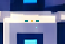
A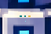
B查看真实页面及落点
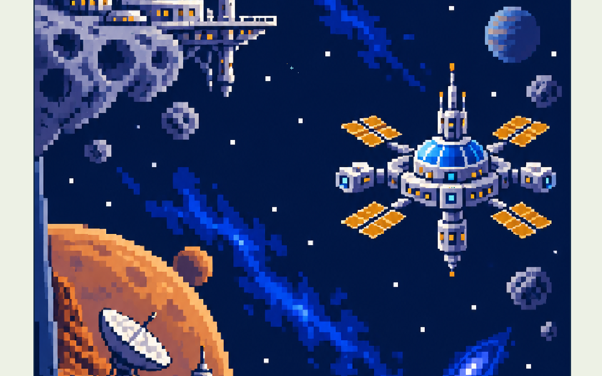
SHA A d330882528d028d9e319ea8cdd034cbfc12357f519b1279874b78feff66bdd7d
B 6263e84437fea0775b2716501463db6ca0d942b04081cca9a9ff04ef2baa8317
source-voyage-reading
目标原始截图 65×44 / 65×44；帧 ['0', '1']。页面原始截图 1440×900，页面图为另一拍摄时刻
查看真实页面及落点
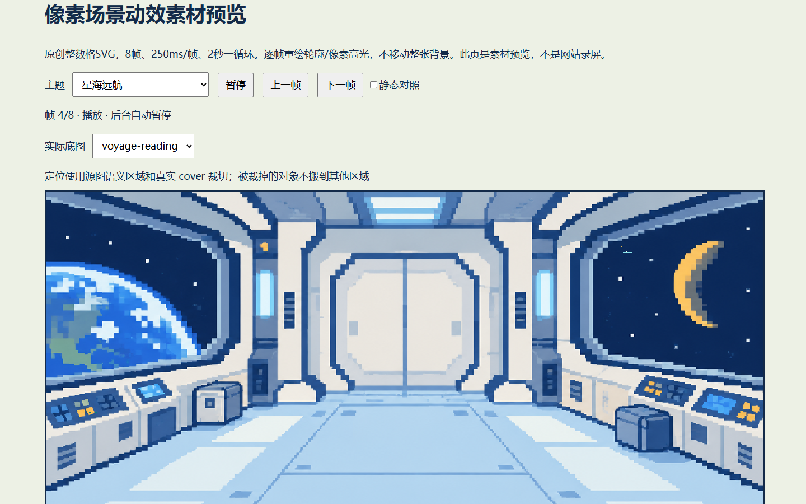
SHA A 30ba31ccfe7a13ee0c4740b9b574152d976e7a86d75d8cc4501a07344a4ea61a
B 132a4eb9bbef614e2c74734d2b7c810a18bc90d9096f833a2f16cfed7a890efc
source-voyage-lab
目标原始截图 65×44 / 65×44；帧 ['5', '6']。页面原始截图 1440×900，页面图为另一拍摄时刻
AB
查看真实页面及落点
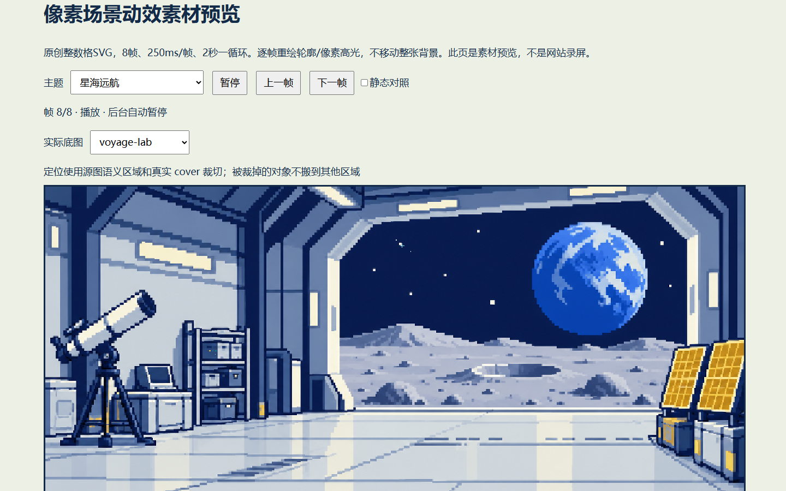
SHA A 72010053852069e720c3cfdf0d0b158e2e33ed26070dbee3f4e124615992ae0c
B e31d92dd403b8fc38b362a4946cce43725f07f827e6a8612f50f5a20482d5567